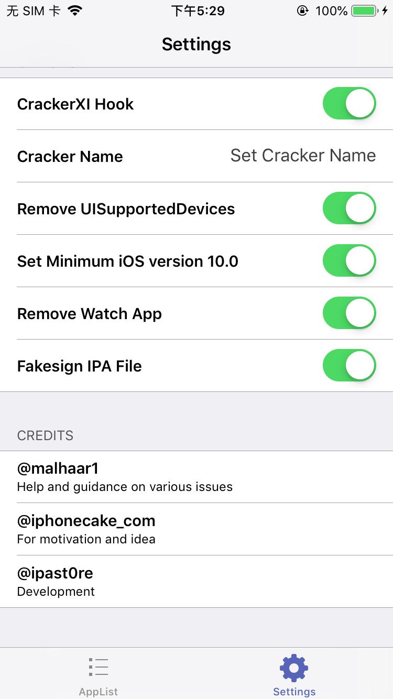
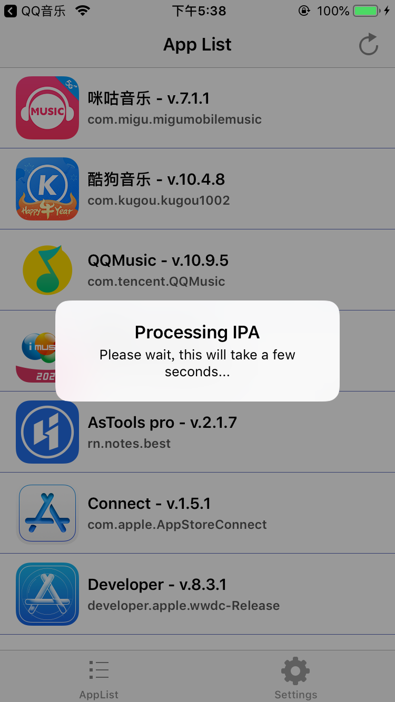

越狱相关
[TOC]
越狱
手机：iPhone 6s
系统版本：iOS 版本 12.4
爱思助手
使用爱思助手一键越狱，老是在生成安装包这一步失败。
unc0ver
使用 unc0ver 进行越狱是可以的。
下载下来是一个ipa，对这个ipa用自己的证书进行签名，然后装到要越狱的机器上就可以。
安装上去点击 越狱即可，广告不用管，多点几次最后就成功了。
越狱之后，Cydia 可能在重启设备后打开就闪退，目前，我是在unc0ver重新点击 Jailbreak ，没什么数据丢失。
SSH
SSH 是较可靠，专为远程登录会话和其他网络服务提供安全性的协议。
iPhone 开启 SSH
通过 cydia 安装 OpenSSH，这样可以远程登录到到手机上，用电脑控制手机。
Mac 开启SSH
Mac 开启SSH，那手机端可以远程传输数据给Mac。
Mac本身安装了ssh服务，但是默认情况下不会开机自启，因此当我们需要用到ssh相关的功能时，只需以下一条命令即可。
启动服务
sudo launchctl load -w /System/Library/LaunchDaemons/ssh.plist查看是否启动
sudo launchctl list | grep ssh # 如果看到下面的输出表示成功启动了 - 0 com.openssh.sshd停止sshd服务
sudo launchctl unload -w /System/Library/LaunchDaemons/ssh.plist
也可以在"系统偏好设置" -> "共享" -> "远程登录"进行操作。
默认密码是 alpine
ssh root@192.168.1.110
The authenticity of host '192.168.1.110 (192.168.1.110)' can't be established.
RSA key fingerprint is SHA256:bpTkEg1C5UPo1dGalw5MdzTJTOszthMb6lY+ZRSrra4.
Are you sure you want to continue connecting (yes/no/[fingerprint])? yes
Warning: Permanently added '192.168.1.110' (RSA) to the list of known hosts.
root@192.168.1.110's password:
脱壳
dumpdecrypted
下载dumpdecrypted，并通过
make命令编译生成dylib库。将动态库拷贝越狱设备的指定目录
scp dumpdecrypted.dylib root@192.168.1.106:/usr/lib将动态库注入到指定进程中
查看进程
yangteki-iPhone:~ root# ps -A | grep Application 966 ?? 0:18.77 /Applications/Cydia.app/Cydia 1335 ?? 0:00.09 /private/var/containers/Bundle/Application/A08EEDC4-C762-4F73-BAB9-F84D32795472/MobileMail.app/PlugIns/MailCacheDeleteExtension.appex/MailCacheDeleteExtension 1336 ?? 0:01.55 /var/containers/Bundle/Application/A08EEDC4-C762-4F73-BAB9-F84D32795472/MobileMail.app/MobileMail 1536 ?? 0:10.05 /var/containers/Bundle/Application/045A86A2-0171-4B82-9B5B-6819B0D8610C/imusicPlayer2.app/imusicPlayer2 1587 ?? 0:00.25 /private/var/containers/Bundle/Application/AB5FC6ED-E810-42D5-B4B1-D14D8B151EAA/Maps.app/PlugIns/MapsWidget.appex/MapsWidget 1590 ?? 0:01.45 /private/var/containers/Bundle/Application/65505231-E545-40FC-95BD-1E960B6C692D/Weather.app/PlugIns/WeatherAppTodayWidget.appex/WeatherAppTodayWidget 1593 ?? 0:01.64 /var/containers/Bundle/Application/1D071931-A793-4517-8517-DE65F06B5362/AltStore.app/AltStore 1632 ?? 0:05.10 /Applications/Preferences.app/Preferences 1648 ttys001 0:00.01 grep Application注入
cd /usr/lib DYLD_INSERT_LIBRARIES=dumpdecrypted.dylib /var/containers/Bundle/Application/045A86A2-0171-4B82-9B5B-6819B0D8610C/imusicPlayer2.app/imusicPlayer2这一步会报错，执行
su mobile也没用，cycript -p 进程id也不行，都是killed -9
Clutch
失败
Clutch -d cn.118100.imusicPlayer2
Zipping imusicPlayer2.app
Error: Could not obtain mach port, either the process is dead (codesign error?) or entitlements were not properly signed!
Error: Failed to dump <NotificationService> with arch arm64
2021-02-22 17:17:55.881 Clutch[5354:102640] failed operation :(
2021-02-22 17:17:55.881 Clutch[5354:102640] application <NSOperationQueue: 0x1043480a0>{name = 'NSOperationQueue 0x1043480a0'}
Error: Failed to dump <NotificationService>
2021-02-22 17:17:55.882 Clutch[5354:102640] failed operation :(
2021-02-22 17:17:55.882 Clutch[5354:102640] application <NSOperationQueue: 0x1043480a0>{name = 'NSOperationQueue 0x1043480a0'}
Error: Can't execute task_for_pid! Do you have the right permissions/entitlements?
Failed to find address of header!
Error: Failed to dump <imusicPlayer2> with arch arm64
2021-02-22 17:17:55.953 Clutch[5354:102638] failed operation :(
2021-02-22 17:17:55.953 Clutch[5354:102638] application <NSOperationQueue: 0x104336310>{name = 'NSOperationQueue 0x104336310'}
Error: Failed to dump <imusicPlayer2>
2021-02-22 17:17:55.953 Clutch[5354:102638] failed operation :(
2021-02-22 17:17:55.953 Clutch[5354:102638] application <NSOperationQueue: 0x104336310>{name = 'NSOperationQueue 0x104336310'}
Error: posix_spawn: Operation not permitted (Error 1)
Error: Failed to dump <NvStreamingSdkCore> with arch arm64
2021-02-22 17:17:55.973 Clutch[5354:102636] failed operation :(
2021-02-22 17:17:55.973 Clutch[5354:102636] application <NSOperationQueue: 0x104344d00>{name = 'NSOperationQueue 0x104344d00'}
Error: Failed to dump <NvStreamingSdkCore>
2021-02-22 17:17:55.974 Clutch[5354:102636] failed operation :(
2021-02-22 17:17:55.974 Clutch[5354:102636] application <NSOperationQueue: 0x104344d00>{name = 'NSOperationQueue 0x104344d00'}
Error: posix_spawn: Operation not permitted (Error 1)
Error: Failed to dump <SXVideoEnging> with arch arm64
2021-02-22 17:17:55.986 Clutch[5354:102639] failed operation :(
2021-02-22 17:17:55.986 Clutch[5354:102639] application <NSOperationQueue: 0x104359a50>{name = 'NSOperationQueue 0x104359a50'}
Error: Failed to dump <SXVideoEnging>
2021-02-22 17:17:55.986 Clutch[5354:102639] failed operation :(
2021-02-22 17:17:55.986 Clutch[5354:102639] application <NSOperationQueue: 0x104359a50>{name = 'NSOperationQueue 0x104359a50'}
Zipping NvStreamingSdkCore.framework
Zipping SXVideoEnging.framework
Zipping NotificationService.appex
FAILED: <imusicPlayer2 bundleID: cn.118100.imusicPlayer2>
Finished dumping cn.118100.imusicPlayer2 in 5.3 seconds
CrackerXI+
- 在cydia中添加 repo.hackyouriphone.org 源地址 http://cydia.iphonecake.com 添加成功后，在cydia中搜索CrackerXI+并安装。
- 安装成功后手机上多了一个App CrackerXI+，打开在Setting 里面全部勾上

选择 'YES, Full IPA'
- 导出

成功之后通过 SSH 或者 iFunbox 传给 Mac 电脑进行重签名安装运行。
解密后的 ipa 存放位置： /var/mobile/Documents/CrackerXI
Framework 注入
目标ipa：imusicPlayer.ipa
待注入Framework: BugInsight.framework
BugInsight.framework 是动态库
lipo -info /Users/mac/WorkSpace/BWorkSpace/爱音乐/BugInsight.framework/BugInsight Non-fat file: /Users/mac/WorkSpace/BWorkSpace/爱音乐/BugInsight.framework/BugInsight is architecture: arm64 file /Users/mac/WorkSpace/BWorkSpace/爱音乐/BugInsight.framework/BugInsight /Users/mac/WorkSpace/BWorkSpace/爱音乐/BugInsight.framework/BugInsight: Mach-O 64-bit dynamically linked shared library arm64
使用 yololib 将 Framework 注入
安装 yololib
yololib 是一个 Xcode 创建的 cmd 项目，下载后运行一下，main 函数报错，但是没有关系，因为我们只是要这个 cmd 项目的 Products。将 Products 下面的 yololib 复制到
/usr/local/bin,这样可以直接在命令行直接使用yololib命令。
注入Framework
首先将ipa后者改成 zip,解压得到 Payload 文件夹
将要注入的 Framework 复制到 Payload/imusicPlayer2.app/Frameworks 里面，Frameworks 如果不存在，直接创建就可以。
修改 Mach-O
重签名
重签名ipa
直接使用 iOS App Signer 进行重签名就可以了，需要注意的是，你需要保证描述文件和证书是匹配的。

选中 Provisioning Profile ，空格可以查看 Provisioning Profile 对应的证书。
- 有时候 iOS App Signer 重签名的不行，手动添加了 Frameworks 目录，再重签名就启动不了。使用
fastlane sigh resign 杭银直销.ipa --signing_identity CC714F69DEFE7CA980A0987D726ED532C657AC1B -p /Users/mac/WorkSpace/BWorkSpace/杭州银行/comlearnOfferApp.mobileprovision
这里有个问题，如果使用 yololib 注入了一个动态库，如果动态库还内嵌了其他的动态库。
BugInsight.framework
BugInsight
Frameworks
FBRetainCycleDetector.framework
Headers
Info.plist
Modules
直接使用 fastlane 重签名会有问题，crash log 如下
Incident Identifier: 6B82E55E-A4E7-41C8-A54D-7F0F4343D7E6
CrashReporter Key: 97d54bd5953ca62e98d8fff24a5491e207dfc2ba
Hardware Model: iPhone8,1
Process: Live-Super-AppStore [4025]
Path: /private/var/containers/Bundle/Application/8B60C04E-C9A9-4AB6-926E-35ACCA3FE0EA/Live-Super-AppStore.app/Live-Super-AppStore
Identifier: com.feng.hzbank
Version: 590013 (5.9.0)
AppStoreTools: 12D4d
Code Type: ARM-64 (Native)
Role: Foreground
Parent Process: launchd [1]
Coalition: com.feng.hzbank [2542]
Date/Time: 2021-05-08 19:36:07.6553 +0800
Launch Time: 2021-05-08 19:36:07.3883 +0800
OS Version: iPhone OS 12.4 (16G77)
Baseband Version: 5.70.01
Report Version: 104
Exception Type: EXC_BAD_ACCESS (SIGKILL - CODESIGNING)
Exception Subtype: UNKNOWN_0x32 at 0x000000010aed8004
VM Region Info: 0x10aed8004 is in 0x10aed8000-0x10aee8000; bytes after start: 4 bytes before end: 65531
REGION TYPE START - END [ VSIZE] PRT/MAX SHRMOD REGION DETAIL
mapped file 000000010add8000-000000010aed8000 [ 1024K] r--/rw- SM=COW ...t_id=6a43294b
---> mapped file 000000010aed8000-000000010aee8000 [ 64K] r-x/rwx SM=COW ...t_id=6a43144b
mapped file 000000010aee8000-000000010aeec000 [ 16K] rw-/rw- SM=COW ...t_id=6a43144b
Termination Reason: Namespace CODESIGNING, Code 0x2
Triggered by Thread: 0
解决方法，自己先使用同样的证书签名将framework签名：
/usr/bin/security find-identity -v -p codesigning
codesign -fs "Apple Development: Xuefeng Wang (6AVK36RY3A)" FBRetainCycleDetector.framework
codesign -fs "Apple Development: Xuefeng Wang (6AVK36RY3A)" BugInsight.framework
安装
ideviceinstaller -i ~/Downloads/imusicPlayer2.ipa
运行注入SDK后的ipa
运行ipa 可能会遇到各种各样的问题
crash log 1
Exception Type: EXC_CRASH (SIGABRT)
Exception Codes: 0x0000000000000000, 0x0000000000000000
Exception Note: EXC_CORPSE_NOTIFY
Termination Description: DYLD, Library not loaded: @executable_path/Frameworks/BugInsight.framework/BugInsight | Referenced from: /var/containers/Bundle/Application/815B83B9-AD75-4ADA-9B1D-BB9693902143/imusicPlayer2.app/imusicPlayer2 | Reason: no suitable image found. Did find: | /var/containers/Bundle/Application/815B83B9-AD75-4ADA-9B1D-BB9693902143/imusicPlayer2.app/Frameworks/BugInsight.framework/BugInsight: no matching architecture in universal wrapper | /private/var/containers/Bundle/Application/815B83B9-AD75-4ADA-9B1D-BB9693902143/imusicPlayer2.app/Frameworks/BugInsight.framework/BugInsight: no matching architecture in universal wrapper
可能原因：
- BugInsight.framework 不是动态库
- BugInsight.framework 是一个 fat 类型的framework
首先不是动态库肯定不行，其次因为ipa里Frameworks文件夹下的其他 Framework 都是 not fat file，所以我将BugInsight.framework改成了 Build Active Architecture Only，只包含越狱手机对应的架构。
crash log 2
Incident Identifier: 6823D9F9-5FE5-4239-A3E7-D818062B9495
Exception Type: EXC_CRASH (SIGABRT)
Exception Codes: 0x0000000000000000, 0x0000000000000000
Exception Note: EXC_CORPSE_NOTIFY
Termination Description: DYLD, Library not loaded: @executable_path/Frameworks/BugInsight.framework/BugInsight | Referenced from: /var/containers/Bundle/Application/C5A9FCD5-3B81-40B8-9D96-D3D587777AE9/imusicPlayer2.app/imusicPlayer2 | Reason: Incompatible library version: imusicPlayer2 requires version 1.0.0 or later, but BugInsight provides version 0.0.0
在 Build Setting 里面设置 Compatibility Version 以及 Current Library Version。

crash log 3
Exception Type: EXC_CRASH (SIGABRT)
Exception Codes: 0x0000000000000000, 0x0000000000000000
Exception Note: EXC_CORPSE_NOTIFY
Termination Description: DYLD, Library not loaded: @rpath/FBRetainCycleDetector.framework/FBRetainCycleDetector | Referenced from: /var/containers/Bundle/Application/9A8E6193-3491-4615-A239-0684483FA714/imusicPlayer2.app/Frameworks/BugInsight.framework//BugInsight | Reason: image not found
SDK项目本身依赖 FBRetainCycleDetector.framework ，在 Build 的时候没有设置好。设置 FBRetainCycleDetector.framework 为 Embed & Sign,项目编译后目录如下
BugInsight.framework
BugInsight
Frameworks
FBRetainCycleDetector.framework
Headers
Info.plist
Modules
这个 BugInsight.framework 是正确的，yoyolib -> 重签名后可以通过 cycript 调用。
Cycript
获取进程id
ps -A | grep Application关联到进程
yangteki-iPhone:~ root# cycript -p 9374 cy# cycript -p imusicPlayer2 cy# [UIApplication sharedApplication] #"<UIApplication: 0x105e053f0>" cy# [NSClassFromString(@"BugInsight") performSelector:@selector(libVersion)]; @"1.2.0"
刚越狱完成，cycript -p 一直报 killed -9，iFunBox也无法直接查看应用沙盒，后来又没有了，不知道是装了什么导致的，可能和 Apple File Conduit "2" 有关，不确定。
cycript
choose(BugInsight) 获取类的实例
cy# choose(BugInsight) [#"<BugInsight: 0x107aaa7a0 - Token: b427fcfb1f9af05c8d7766ca60b02eb7>"]地址
cy# [#0x107aaa7a0 libVersion] @"1.2.0"执行代码
[BugInsight setEnableLogging:YES]; [BugInsight setLoggerLevel:0]; [BugInsight sharedInstanceWithToken:@"8d6336dfbed2793725759fbb374eb4a1" serverIpAddress:@"106.75.140.11" serverPort:8082];打印视图层次
UIApp.keyWindow.recursiveDescription().toString()常用方法
object-c message _ivarDescription _shortMethodDescription nextResponder _autolayoutTrace recursiveDescription _methodDescription
cy# choose(UIViewController)
[#"<IMHomeRecommendViewController: 0x10702c600>",#"<IMExploreMusicViewController: 0x107064000>",#"<IMXMLYHomeViewController: 0x107064800>",#"<IMTabBarVideoRingViewController: 0x107085c00>",#"<IMMyMusicViewController: 0x107086400>",#"<EasyNavigationController: 0x107086a00>",#"<EasyNavigationController: 0x107088800>",#"<EasyNavigationController: 0x10708d600>",#"<EasyNavigationController: 0x10708e000>",#"<IMTabBarAddDiyViewController: 0x10680be00>",#"<IMTabBarViewController: 0x10684ce00>",#"<EasyNavigationController: 0x10685fa00>"]
cy# [#0x10702c600 viewDidAppear:YES]
throw #"UX detected an unrecognized selector, 'mp_viewDidAppear:', sent to 'IMSongListViewController'. It's possible _cmd was renamed by an unsafe method_exchangeImplementations()."
Tweak
有了 cycript ,已经可以进行各种调试了，但是每次都需要手动去调用一堆东西，比如 sdk 启动
[BugInsight setEnableLogging:YES];
[BugInsight setLoggerLevel:0];
[BugInsight sharedInstanceWithToken:@"8d6336dfbed2793725759fbb374eb4a1" serverIpAddress:@"106.75.140.11" serverPort:8082];
如果你需要在 applicationDidFinishLaunch: 里面做一些事情，还会有问题。所以进一步自动化，使用 tweak 进行注入，每次启动App，都能自动启动我们的SDK。
https://www.jianshu.com/p/a5435650e828
https://www.jianshu.com/p/d44242f20b40
https://github.com/theos/theos/wiki/Structure
export THEOS=/opt/theos
export PATH=/opt/theos/bin/:$PATH
sudo mkdir /opt/theos
brew install ldid
brew install dpkg
注意，没添加SDK，make package 会报错。
Get an iOS SDK:
Xcode always provides the latest iOS SDK, but as of Xcode 7.3, it no longer includes private frameworks you can link against. This may be an issue when developing tweaks. You can get patched SDKs from our SDKs repo.
curl -LO https://github.com/theos/sdks/archive/master.zip
TMP=$(mktemp -d)
unzip master.zip -d $TMP
mv $TMP/sdks-master/*.sdk $THEOS/sdks
rm -r master.zip $TMP
hello world
创建模板工程
/opt/theos/vendor/nic/bin/nic.pl 选择 iPhone tweak 填写项目信息 Project Name: 项目名称，可以随便写，例如：111 Package Name: 项目ID，可以随便写，例如：com.gn.111 Author/Maintainer Name: 作者，直接敲回车，默认就是Mac上的当前用户名 MobileSubstrate Bundle filter: 需要逆向的App的BundleID，可以通过Cycript查看， 例如： 微信的BundleID就是com.tencent.wechat 桌面的BundleID就是com.apple.springboard (Springboard 就是iOS的桌面)Makefile
TARGET := iphone:clang:latest:7.0 // 这个设置不知道有什么用，看其实是目标进程，但是实际好像什么值都没有关系 INSTALL_TARGET_PROCESSES = SpringBoard // 手机地址 THEOS_DEVICE_IP = 192.168.31.254 THOS_DEVICE_PORT = 22 include $(THEOS)/makefiles/common.mk TWEAK_NAME = MyTweak MyTweak_FILES = Tweak.x MyTweak_CFLAGS = -fobjc-arc include $(THEOS_MAKE_PATH)/tweak.mk修改 MyTweak.plist，这个设置很重要，决定你的 tweak 作用的应用
因为，我是重签名的应用，bundle id 直接通过Xcode 获取。
{ Filter = { Bundles = ( "com.learn.OfferApp" ); }; }也可以通过私有 Api 去获取
[[LSApplicationWorkspace defaultWorkspace] allApplications]Tweak.x
现在可以写自己的逻辑了，这里是调用 AppInsight.framework 开发的接口,注意AppInsight.framework 已经通过yoyolib写入到可执行文件了，直接调用就可以。应该也可以通过 Makefile 里的添加指令实现，不过暂时没有时间搞。
MyTweak_LDFLAGS = -F./layout/usr/bin/Frameworks -framework MachOKit -miphoneos-version-min=8.0 -rpath /usr/bin/Frameworks如果直接 #import
，等下 make package 会报错，改成动态调用好了。
#import <UIKit/UIKit.h>
%hook AppDelegate
-(void)applicationDidFinishLaunching:(id)application{
%orig;
NSString *version = [NSClassFromString(@"AppInsight") performSelector:@selector(libVersion)];
UIAlertView *alert = [[UIAlertView alloc] initWithTitle:version message:@"我来了，哈哈哈" delegate:nil cancelButtonTitle:@"不见" otherButtonTitles:@"好的", nil];
[alert show];
[NSClassFromString(@"AppInsight") performSelector:@selector(setSessionBackgroundTime:) withObject:@(20)];
[NSClassFromString(@"AppInsight") performSelector:@selector(sharedInstanceWithToken:serverURL:) withObject:@"49b25a610baacbc3a4fe10a6b69808ac" withObject:@"http://appdatasee.com"];
}
%end
打包安装
make && make package && make install启动对应的App，可以看到弹窗。
Xcode 调试
使用 cycript 可以实现很多功能，但是对于视图层次、内存、CPU等没有 Xcode 那么直观。已经重签名了，就可以装到其他设备上了，越狱非越狱都可以。
注意重签名的描述文件需要的 develop 的。
Xcode -> 随便运行一个项目 -> Debug -> Attach to process -> 选择你的应用。让后
工具
iFunBox
可以实现 Mac 和 iPhone 数据互传。
https://www.i-funbox.com/en_download.html
判断ipa 是否脱壳
otool -l Payload/imusicPlayer2.app/imusicPlayer2 | grep cryptid
cryptid 0
cryptid为0即为已脱壳，为1为加密状态
查看 ipa 签名
codesign -d -vv Payload/imusicPlayer2.app
Executable=/Users/mac/WorkSpace/BWorkSpace/爱音乐/Payload/imusicPlayer2.app/imusicPlayer2
Identifier=cn.118100.imusicPlayer2
Format=app bundle with Mach-O thin (arm64)
CodeDirectory v=20200 size=168131 flags=0x0(none) hashes=5246+5 location=embedded
Signature size=4343
Authority=(unavailable)
Info.plist=not bound
TeamIdentifier=LJX9PEWK8U
Sealed Resources version=2 rules=14 files=1872
Internal requirements count=0 size=12
查看证书
security find-identity -v -p codesigning
1) 5B55E860367961740E1339A888A52C643B09D44F "Apple Development: jiangsai1979@gmail.com (5N3EY3WX8G)"
2) 10538AF8DEE163AA004C82C884FA77936259AC43 "Apple Development: Sai Jiang (DEGAE9UYFT)"
3) 674D18BAF901D5790B1755494AEE34B20BB95706 "Apple Development: Xuefeng Wang (6AVK36RY3A)"
3 valid identities found
"Apple Development: Xuefeng Wang (6AVK36RY3A)"
cp -r Payload\ O Payload
cp -r BugInsight.framework Payload/imusicPlayer2.app/Frameworks
yololib Payload/imusicPlayer2.app/imusicPlayer2 Frameworks/BugInsight.framework/BugInsight
zip -ry
ideviceinstaller -i ~/Downloads/imusicPlayer2.ipa
恢复符号表
git clone --recursive https://github.com/tobefuturer/restore-symbol.git
cd restore-symbol && make
./restore-symbol
小爱直播
签名信息
fastlane sigh resign xaLive.ipa --signing_identity 674D18BAF901D5790B1755494AEE34B20BB95706 -p /Users/mac/Documents/pp/hangzhoubankpp.mobileprovision
fastlane sigh resign xaLive.ipa --signing_identity CC714F69DEFE7CA980A0987D726ED532C657AC1B -p /Users/mac/WorkSpace/BWorkSpace/杭州银行/comlearnOfferApp.mobileprovision
rm -r Payload
rm xaLive.ipa
cp -r Payload\ O Payload
cp -r BugInsight.framework Payload/Live-Super-AppStore.app/Frameworks
yololib Payload/Live-Super-AppStore.app/Live-Super-AppStore Frameworks/BugInsight.framework/BugInsight
zip -ry xaLive.ipa Payload
fastlane sigh resign xaLive.ipa --signing_identity 674D18BAF901D5790B1755494AEE34B20BB95706 -p /Users/mac/Documents/pp/hangzhoubankpp.mobileprovision
ideviceinstaller -i xaLive.ipa
cycript -p Live-Super-AppStore
[BugInsight setEnableLogging:YES];
[BugInsight setLoggerLevel:0];
[BugInsight sharedInstanceWithToken:@"8d6336dfbed2793725759fbb374eb4a1" serverIpAddress:@"106.75.140.11" serverPort:8082];
[BugInsight sendViewTree];
AppInsight
rm -r Payload
rm xaLive.ipa
cp -r Payload\ O Payload
cp -r AppInsight.framework Payload/Live-Super-AppStore.app/Frameworks
yololib Payload/Live-Super-AppStore.app/Live-Super-AppStore Frameworks/AppInsight.framework/AppInsight
zip -ry xaLive.ipa Payload
fastlane sigh resign xaLive.ipa --signing_identity 674D18BAF901D5790B1755494AEE34B20BB95706 -p /Users/mac/Documents/pp/hangzhoubankpp.mobileprovision
ideviceinstaller -i xaLive.ipa
杭银银行
cd ~/WorkSpace/AWorkSpace/杭州银行/杭州银行注入
rm -r Payload
cp -r Payload\ O Payload
rm HZMobileBankEmas.ipa
rm -rf Payload/HZMobileBankEmas.app/PlugIns
mkdir Payload/HZMobileBankEmas.app/Frameworks
cp -r AppInsight.framework Payload/HZMobileBankEmas.app/Frameworks
yololib Payload/HZMobileBankEmas.app/HZMobileBankEmas Frameworks/AppInsight.framework/AppInsight
zip -ry HZMobileBankEmas.ipa Payload
// 重签名
fastlane sigh resign HZMobileBankEmas.ipa --signing_identity CC714F69DEFE7CA980A0987D726ED532C657AC1B -p /Users/mac/WorkSpace/BWorkSpace/杭州银行/comlearnOfferApp.mobileprovision
fastlane sigh resign HZMobileBankEmas.ipa --signing_identity 674D18BAF901D5790B1755494AEE34B20BB95706 -p /Users/mac/Documents/pp/hangzhoubankpp.mobileprovision
ideviceinstaller -i HZMobileBankEmas.ipa
cycript -p HZMobileBankEmas
[AppInsight setSessionBackgroundTime:0]
[AppInsight startReplay]
[AppInsight stopReplay:YES completion:nil]
SSL Kill Switch
SSLKillSwitch 2 是一个在设备上禁用 SSL 证书验证的 tweak。这对于查看应用程序通过 MITM 代理（例如Charles）发送的数据很有用。
ssl-kill-switch2: https 抓包会用到。
杭银直销
cd ~/WorkSpace/AWorkSpace/杭州银行
rm -r Payload
rm 杭银直销.ipa
cp -r Payload\ O Payload
mkdir Payload/杭银直销.app/Frameworks
cp -r AppInsight.framework Payload/杭银直销.app/Frameworks
yololib Payload/杭银直销.app/杭银直销 Frameworks/AppInsight.framework/AppInsight
zip -ry 杭银直销.ipa Payload
fastlane sigh resign 杭银直销.ipa --signing_identity CC714F69DEFE7CA980A0987D726ED532C657AC1B -p /Users/mac/WorkSpace/BWorkSpace/杭州银行/comlearnOfferApp.mobileprovision
ideviceinstaller -i 杭银直销.ipa
ssh root@192.168.31.254
ps -ef | grep Application
cycript -p 杭银直销
[AppInsight setReplayType:1];
[AppInsight setEnableLogging:YES];
[AppInsight sharedInstanceWithToken:@"49b25a610baacbc3a4fe10a6b69808ac" serverIpAddress:@"139.9.83.51" serverPort:80];
fastlane sigh resign 杭银直销.ipa --signing_identity 674D18BAF901D5790B1755494AEE34B20BB95706 -p /Users/mac/WorkSpace/AWorkSpace/杭州银行/devcomlearnOfferApp.mobileprovision
获取App Bundle Id
省呗
cd ~/WorkSpace/AppInsightWorkSpace/杭州银行
rm -r Payload
rm shengbei.ipa
cp -r Payload\ O Payload
rm -rf Payload/shengbei.app/PlugIns
mkdir Payload/shengbei.app/Frameworks
cp -r AppInsight.framework Payload/shengbei.app/Frameworks
yololib Payload/shengbei.app/shengbei Frameworks/AppInsight.framework/AppInsight
zip -ry shengbei.ipa Payload
fastlane sigh resign shengbei.ipa --signing_identity CC714F69DEFE7CA980A0987D726ED532C657AC1B -p /Users/mac/WorkSpace/BWorkSpace/杭州银行/comlearnOfferApp.mobileprovision
ideviceinstaller -i shengbei.ipa
ssh root@192.168.31.6
ps -ef | grep Application
cycript -p shengbei
[AppInsight setReplayType:1];
[AppInsight setEnableLogging:YES];
[AppInsight sharedInstanceWithToken:@"49b25a610baacbc3a4fe10a6b69808ac" serverIpAddress:@"139.9.83.51" serverPort:80];
Xcode 调试第三方App
- Edit Scheme -> Ask on Launch

选择一个 App，直接重 AppStore 下载的也可以。

竟然能看到 Log，真的太奇怪。